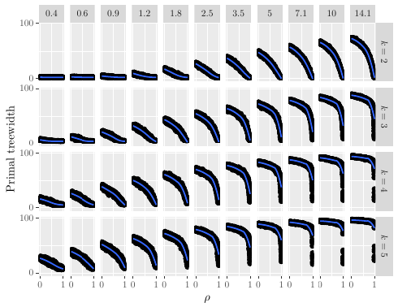

Publications

I am a Research Fellow at the School of Computing of the National University of Singapore, hosted by Kuldeep S. Meel. I received my PhD in Robotics and Autonomous Systems jointly from the University of Edinburgh and Heriot-Watt University, supervised by Vaishak Belle. I received my MSci in Computing Science degree from the University of Glasgow.
I am interested in discrete algorithms that count and compute sums of products from a logic-based description of the problem. Specifically, my recent work is on weighted model counting (i.e., a weighted version of #SAT) and first-order model counting. Algorithmic techniques used to solve these problems include dynamic programming, knowledge compilation, and various representations of Boolean and pseudo-Boolean functions. Solving such model counting problems efficiently is crucial for many areas of artificial intelligence (AI) such as explainable AI, neural-symbolic AI, probabilistic programming, and statistical relational AI. Other applications include bioinformatics, data mining, natural language processing, prognostics, and robotics. I am also interested in graph algorithms, constraint satisfaction, and search algorithms. Previously, I have worked on graph algorithms, algorithm portfolios, formal modelling with bigraphs, and inverse reinforcement learning.